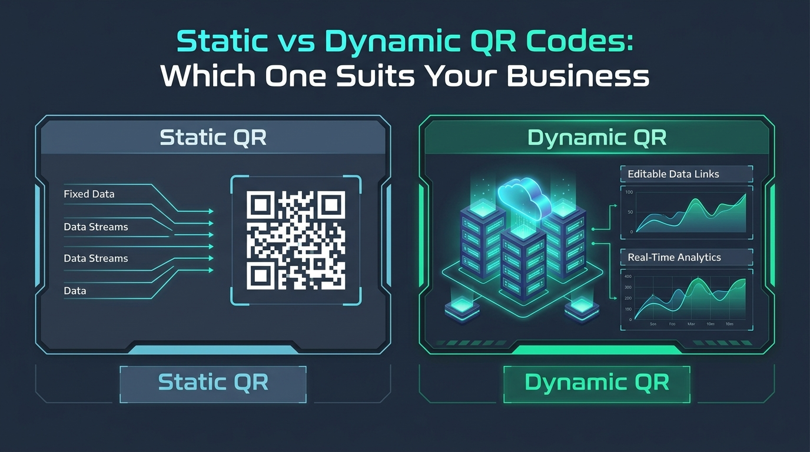

Static vs Dynamic QR Codes: Which Is Best for Your Business?
Choose a static QR code for stable content when you do not need a QR-platform redirect or built-in scan analytics. The encoded content remains fixed, and the destination still needs to stay available.
Choose a dynamic QR code when you need to edit a destination after printing or use analytics offered by a QR platform. These features usually depend on that provider's service, policies, and pricing.
Integrating QR codes into packaging, marketing collateral, and customer touchpoints is no longer optional—it is a core operational standard. However, decision-makers are immediately confronted with a fundamental technical choice: Static vs Dynamic QR Codes. Choosing the wrong architecture can lead to broken customer experiences or unnecessary recurring operational SaaS costs.

1. Understanding the Core Technology
The core difference is whether the QR code encodes its destination or content directly, or instead encodes a provider-managed URL that can redirect to a destination. This is distinct from the method used to generate the QR image: either type can be created by different software tools.
- Static QR Codes: Encodes target data (e.g., Wi-Fi credentials, plain text, or vCard contact structures) directly into the matrix payload. Scanners parse this raw data directly on the client side without communicating with an intermediate routing server.
- Dynamic QR Codes: Embeds a shortened proxy URL that redirects the client to the ultimate destination via a central server. This enables post-print URL modifications and telemetry logging.
2. Key Advantages of Static QR Codes
Static QR codes can suit stable use cases where the encoded content is unlikely to change and a QR-platform redirect is unnecessary. Their practical lifespan still depends on the code remaining readable and the encoded content or destination remaining valid:
- No QR-platform redirect for typical static URLs: A static URL QR code can send scanners directly to the encoded destination without relying on a QR provider's redirect service.
- Potentially less provider-side scan data: Without a QR-platform redirect, that QR provider does not receive scan requests through its redirect endpoint. The destination website may still collect logs or analytics.
- No QR-platform subscription required for basic scanning: Static codes commonly work without an ongoing QR management subscription, although the generator or other services may have separate costs.
- Fixed encoded content: The payload cannot normally be edited in place. If the URL or content must change, a new static code is usually needed.
3. Key Advantages of Dynamic QR Codes
Dynamic QR codes are useful when post-print flexibility or provider analytics matters. Their exact capabilities, data collection, and pricing vary by service:
- Post-Print Destination Editing: Update target URLs behind physically printed materials, avoiding reprinting costs caused by broken links.
- Optional analytics: Some providers offer scan counts or other aggregate metrics. Available fields and retention practices depend on the provider and its configuration.
- Provider dependency: The redirect service must remain available, and its terms, privacy practices, and fees can affect long-term use.
4. Technical Feature Comparison Matrix
| Evaluation Criteria | Static QR Code | Dynamic QR Code |
|---|---|---|
| Encoded content | Content or destination is encoded directly | Typically encodes a provider-managed redirect URL |
| Change after printing | Usually requires generating and printing a new code | Destination can usually be edited through the provider |
| Platform analytics | Not built into the code itself | Often available, depending on the service |
| QR-provider redirect | Not needed for a typical direct static URL | Usually required for provider-managed destination changes |
| Privacy considerations | No QR-provider redirect for a typical static URL; destination tracking may still occur | Review provider logs, analytics, and retention practices |
| Fees | Often no QR-platform subscription is needed for basic use | Some features may require a recurring subscription |
5. Security & Redirect Considerations
A static QR code that contains a destination URL can avoid the extra redirect request required by a provider-managed dynamic code. That can remove one network step, but it is not a universal decoding-speed benchmark: actual performance depends on the code, scanner, network, and destination. A direct static code also avoids that QR provider's redirect endpoint, although it does not eliminate every possible security risk.
6. Frequently Asked Questions (FAQ)
A static QR code encodes its content or destination directly. A dynamic QR code typically encodes a provider-managed URL that redirects to a destination, allowing post-print edits and sometimes analytics. The destination itself may still require an internet connection.
A static QR code has no built-in expiry mechanism, but it works only while the code remains readable and any encoded destination or content remains usable. A website URL can stop working even when the QR image is unchanged.
A static URL QR code can reduce data sent to a QR provider because it does not need that provider's redirect endpoint. This does not guarantee legal compliance: the generator, destination website, analytics, and overall data practices still matter.
If visual branding is important, continue with our guide to privacy-conscious customizable QR generators. For restaurant menus that include logos or images, our technical walkthrough explains how browser-side Canvas processing can reduce unnecessary image uploads.
7. Related Resources & Guides
Final Verdict
Selecting between Static and Dynamic QR codes ultimately depends on your strategic goals. If your priority is stable content without a QR-provider redirect or built-in platform analytics, static QR codes generated by tools like MatrixQR Studio may be a good fit. For evolving marketing initiatives requiring tracking metrics and real-time destination modifications, dynamic architectures provide the necessary flexibility.